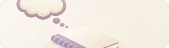

Design system
Tokens and components for the Atode hi-fi prototype, taken from the Figma hi-fi onboarding (node 69:2274). Colours live in tokens.css: change one there and this page and the prototype both update. Contrast figures below are worked out live from the current values.
Colour roles
Components only use these roles. Each one points at a palette colour. Text roles show contrast against the page cream and white.
Palette
The raw colours. Two are changed from Figma for accessibility, see “Changes from Figma” below.
Type
Inter. Nothing smaller than 14px.
Space and shape
Spacing steps, corner radii and shadows.
Components
The same classes the prototype uses.
Buttons · .btn-primary / -secondary / -danger
Get started Call NHS 111, then choose option 2 Call 999Header · .app-header + .help-pill
Safety note · .safety
Atode isn't for emergencies.
If you’re not safe, get help now →Step card · .step.card
Notice it
A worry pops up while you're busy.
Ticket · .ticket
Collect at 6pm
Atode is holding this one, so you don't have to.
Radio option · .option
Switch · .switch
The reminder never shows your worries.
Choice tiles · .tile / .tile-pill
Illustration slots · .illus-hero / -clock / -thought / -hand

Drop a PNG into assets/illustrations/ with the same name and it replaces the icon.
Changes from Figma
Made so every screen meets the project rules: text 14px or larger, 4.5:1 for text, 3:1 for controls.
- Muted text
#7a6e64→#716559. The Figma colour is 4.4:1 on the cream page. - Step numbers: white on amber is 2:1, so the numbers are dark brown.
- Placeholder
#c8bea8(1.8:1) → muted text colour. - Step label 13px → 14px.
- Input, radio and switch borders use
#8a7e72so the controls are visible (the Figma sand border is 1.3:1). - Selected tiles and pills get a tick, so the choice doesn't rely on colour alone.